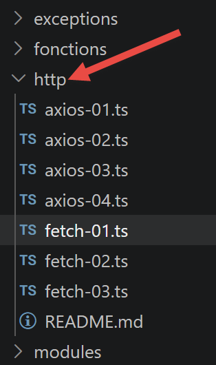
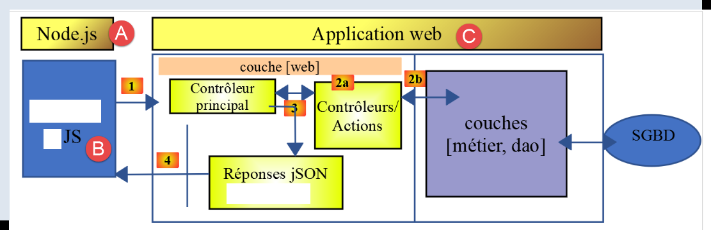

5. The HTTP and TypeScript functions
Here we present two ways to make HTTP requests in TypeScript: the [fetch] function, which has been native to Node since version 18, and the third-party library [axios]. The scripts for this chapter are located in the [http] folder of the project.

5.1. Choosing Tools HTTP
In 2019, fetch had not yet been implemented by node.js, and the original document recommended the node-fetch package. Since Node 18 (2022), [fetch] has been a native global function, standardized by the WHATWG Fetch standard—no longer needs to be imported.
[axios] remains an interesting library, however: compatible with both node.js and browsers, it offers a slightly richer API (interceptors, automatic JSON serialization, standardized error handling). We present both, using the same example, to show that the coding approach is similar.
5.2. The Tax Calculation Server
This chapter, like the following ones, refers to the NestJS server installed earlier. The test architecture is as follows:
 |
In [A-B], JavaScript code executed by [node.js] will send requests to the web application [C] via [1]. The web application will send back responses jSON (4). The client-side JavaScript code can be organized into layers [UI, métier, dao] (UI: User Interface). We will do this later. To run the following scripts, your server NestJS must be running.
5.3. [fetch-01] script
This script uses [fetch] to initialize a JSON session with the tax calculation server:
'use strict';
// [mise à jour 2026] In 2019, you had to install the [node-fetch] package to access
// the [fetch] function on the Node side. Since Node 18 (2022), [fetch] has been a
// native global function, standardized by the "WHATWG Fetch standard": you no longer need to import it.
// imports
import qs from 'qs';
import { sprintf } from 'sprintf-js';
import moment from 'moment';
// URL core of the tax calculation server
const baseUrl: string = 'http://localhost:3000/main.php?';
// init session
async function initSession(): Promise<any> {
// [mise à jour 2026] The native [fetch] does not recognize the [timeout] option.
// To limit the wait time, it is provided with a [signal] generated by
// [AbortSignal.timeout(ms)] (available since Node 17.3): once this timeout has elapsed,
// the query is automatically canceled and [fetch] raises an error.
const options: RequestInit = {
method: "GET",
signal: AbortSignal.timeout(2000)
};
// Execution of the request HTTP [get /main.php?action=init-session&type=json]
let débutFetch: moment.Moment | undefined;
try {
// asynchronous request—[fetch] returns a promise
débutFetch = moment(Date.now());
const response = await fetch(baseUrl + qs.stringify({
action: 'init-session',
type: 'json'
}), options);
// [response] is the entire response HTTP from the server (HTTP headers + the response itself)
// We display this response to see its structure
console.log(sprintf("réponse fetch formatée en json,=%j, %s", response, heure(débutFetch)));
console.log("réponse fetch en javascript=", response);
// The headers are HTTP
console.log("entêtes de la réponse=", response.headers);
// if the response is of type application/json, the server’s JSON response is retrieved using the asynchronous function [response.json()]
// In this case, the calling code receives a [Promise] object
// [await] allows you to retrieve the server’s response [json] rather than its promise
const débutJson = moment(Date.now());
const objet = await response.json();
console.log(sprintf("réponse json=%j, type=%s, %s", objet, typeof (objet), heure(débutJson)));
return objet;
// If the response is of type text/plain, the server’s text response is obtained with [response.text()]
// In this case, the calling code receives a [Promise] object
// [await] allows you to retrieve the server’s response [texte] rather than its promise
// const text = await response.text();
// console.log("response text=", text);
// return text;
} catch (error: any) {
// We're here because the server sent an error code [404 Not Found, ...] along with an empty body—we're displaying the error to see its structure
// or because the client [fetch] threw an exception (network inaccessible, etc.)
// the error structure is displayed
console.log(sprintf("error fetch en json=%j, %s", error, heure(débutFetch)));
console.log("error fetch en javascript=", typeof (error), error);
// the received error message is displayed
throw error.message;
}
}
// the `main` function executes the asynchronous function [initSession]
async function main(): Promise<void> {
try {
console.log("requête HTTP vers le serveur en cours ---------------------------------------------");
const response = await initSession();
console.log("succès ---------------------------------------------");
console.log("réponse=", response, typeof (response))
} catch (error) {
console.log("erreur ---------------------------------------------");
console.log("erreur=", error, typeof (error));
}
}
// test
main();
// utility for displaying time and duration
function heure(début?: moment.Moment): string {
// current time
const now = moment(Date.now());
// time formatting
let result = "heure=" + now.format("HH:mm:ss:SSS");
// Should a duration be calculated?
if (début) {
const durée = now.valueOf() - début.valueOf();
const milliseconds = durée % 1000;
const seconds = Math.floor(durée / 1000);
// Time and duration formatting
result = result + sprintf(", durée= %s seconde(s) et %s millisecondes", seconds, milliseconds);
}
// Result
return result;
}
- lines 3–5: [mise à jour 2026] — comment noting that
fetchis now native, unlike in 2019; - line 13: this line is important. It specifies the header for the URL that the script will query. This will be supplemented by any parameters. Here, we used the configuration defined in the section “Installing a NestJS server”;
- line 22: AbortSignal.timeout(2000) — replaces the timeout option in node-fetch (which does not exist in native fetch): if the request takes longer than 2 seconds, it is automatically canceled;
- line 29: fetch(URL, options) — the syntax remains that of standard fetch: a URL, and an options object (method, cancellation signal, etc.);
- lines 30–31: a jSON session is initiated;
- line 36: the entire server response is displayed;
- line 38: the response headers are displayed;
- line 43: await response.json() — extracts the body JSON from the response; this is itself an asynchronous operation (the response may be a stream still being received);
- line 52:
fetchonly throws an exception if the requestHTTPfailed (network unreachable, timeout, etc.). If a response is received, even with an error code (400, 500, etc.),fetchdoes not throw an exception: the response is normally available, line 38.
Execution result:
requête HTTP vers le serveur en cours ---------------------------------------------
réponse fetch formatée en json,={}, heure=12:36:31:319, durée= 0 seconde(s) et 93 millisecondes
réponse fetch en javascript= Response {
status: 200,
statusText: 'OK',
headers: Headers {
date: 'Sun, 06 Sep 2026 10:36:31 GMT',
server: 'Apache/2.4.66 (Win64) OpenSSL/3.0.18 PHP/8.3.30',
'x-powered-by': 'PHP/8.3.30',
'cache-control': 'max-age=0, private, must-revalidate, no-cache, private',
'set-cookie': 'PHPSESSID=9u1rb9euj0m6f18efm7b5m952t; path=/',
'content-length': '86',
connection: 'close',
'content-type': 'application/json'
},
body: ReadableStream { locked: false, state: 'readable', supportsBYOB: true },
bodyUsed: false,
ok: true,
redirected: false,
type: 'basic',
url: 'http://localhost/main.php?action=init-session&type=json'
}
entêtes de la réponse= Headers {
date: 'Sun, 06 Sep 2026 10:36:31 GMT',
server: 'Apache/2.4.66 (Win64) OpenSSL/3.0.18 PHP/8.3.30',
'x-powered-by': 'PHP/8.3.30',
'cache-control': 'max-age=0, private, must-revalidate, no-cache, private',
'set-cookie': 'PHPSESSID=9u1rb9euj0m6f18efm7b5m952t; path=/',
'content-length': '86',
connection: 'close',
'content-type': 'application/json'
}
réponse json={"action":"init-session","état":700,"réponse":"session démarrée avec type [json]"}, type=object, heure=12:36:31:323, durée= 0 seconde(s) et 2 millisecondes
succès ---------------------------------------------
réponse= {
action: 'init-session',
'état': 700,
'réponse': 'session démarrée avec type [json]'
} object
- Lines 3–22: the entire server response;
- line 4: the 200 status code means that the server was able to process the requested URL. This is shown on line 21. We have already used this URL with the Postman client;
- lines 23–32: the response headers. They provide information about the response that follows. For example, on line 29, the server indicates that this response is 86 characters long;
- line 28: the server sent a session cookie. This allows a client to maintain a memory space on the server called a session. This is managed by the web server. After receiving this session cookie—which is actually the client’s identifier with the server—the client must send it back with every new request. Note the format of this session cookie. We will retrieve it shortly in a client as TypeScript.
- line 33: the server’s response jSON;
5.4. script [fetch-02]
This script reuses fetch-01 while removing all demonstration details that are unnecessary for everyday use:
'use strict';
// [mise à jour 2026] [fetch] is now a native global function in Node
// (since Node 18): you no longer need to import the [node-fetch] package as you did in 2019.
// imports
import qs from 'qs';
// URL, the base package for the tax calculation server
const baseUrl: string = 'http://localhost:3000/main.php?';
// init session
async function initSession(): Promise<any> {
// request options HHTP [get /main.php?action=init-session&type=json]
// [AbortSignal.timeout(ms)] replaces the option [timeout], which does not exist in native fetch
const options: RequestInit = {
method: "GET",
signal: AbortSignal.timeout(2000)
};
// Execution of the query HTTP [get /main.php?action=init-session&type=json]
const response = await fetch(baseUrl + qs.stringify({
action: 'init-session',
type: 'json'
}), options);
// Result received as jSON
return await response.json();
}
// the main function calls the asynchronous function [initSession]
async function main(): Promise<void> {
try {
console.log("requête HTTP vers le serveur en cours ---------------------------------------------");
const response = await initSession();
console.log("succès ---------------------------------------------");
console.log("réponse=", response)
} catch (error: any) {
console.log("erreur ---------------------------------------------");
console.log("erreur=", error.message);
}
}
// test
main();
Execution result:
5.5. script [axios-01]
Same example, with [axios]:
'use strict';
import axios, { AxiosInstance, AxiosRequestConfig } from 'axios';
// default axios configuration
axios.defaults.timeout = 2000;
axios.defaults.baseURL = 'http://localhost:3000/';
// init session
async function initSession(axios: AxiosInstance): Promise<any> {
// request options HHTP [get /main.php?action=init-session&type=json]
const options: AxiosRequestConfig = {
// [mise à jour TypeScript] axios.request() accepts, in terms of typing, only one
// configuration argument: the URL must therefore appear in [options.url]
// rather than as a separate first parameter of `request()`
url: 'main.php',
method: "GET",
// parameters of URL
params: {
action: 'init-session',
type: 'x'
}
};
// execution of the request HTTP [get /main.php?action=init-session&type=json]
try {
// asynchronous request
const response = await axios.request(options);
// The response consists of the entire HTTP response from the server (HTTP headers + the response itself)
// This response is displayed to view its structure
// console.log("axios=", response response");
// The server's response is in [response.data]
return response.data;
} catch (error: any) {
// We are here because the server sent an error code [404 Not Found, 500 Internal Server Error, ...]
// The parameter [error] is an exception instance—it can take various forms
// It is displayed to show its structure
// console.log("axios error=", typeof (error), error);
if (error.response) {
// The server reported an error in the status HTTP, but it also sent a response
// so this response is found in [error.response.data]
// We know that the server sends responses jSON with the structure {action, status, response}
// and that in the event of an error, the error message is in [réponse]
return error.response.data;
} else {
// the error is triggered
throw error;
}
}
}
// the `main` function executes the asynchronous function [initSession]
async function main(): Promise<void> {
try {
console.log("requête HTTP vers le serveur en cours ---------------------------------------------");
const response = await initSession(axios);
console.log("succès ---------------------------------------------");
console.log("réponse=", response, typeof (response))
} catch (error: any) {
console.log("erreur ---------------------------------------------");
console.log("erreur=", error.message);
}
}
// test
main();
- The URL query is constructed from the information in lines 6, 16, 19, and 20;
- line 26: axios.request(options) — unlike
fetch, the URL and the options are grouped into a single configuration object (line 11); - line 37: error.response — if the server responded (even with an error code), Axios places this response in error.response, which is accessible in the
catchblock — unlikefetch, Axios always throws an exception whenever the status code is not a success (2xx); - line 31: the successful response is in response.data — axios automatically extracts JSON; there’s no need for a separate await response.json() as with fetch.
Execution result:
5.6. [axios-03] script — authentication
This script chains two requests: init-session, followed by authenticate-user in **[POST], with a body encoded by the **[qs] library:
'use strict';
import axios, { AxiosInstance, AxiosRequestConfig } from 'axios';
import qs from 'qs'
// Axios configuration
axios.defaults.timeout = 2000;
axios.defaults.baseURL = 'http://localhost:3000/';
// init session
async function initSession(axios: AxiosInstance): Promise<any> {
// request options HHTP [get /main.php?action=init-session&type=json]
const options: AxiosRequestConfig = {
// [mise à jour TypeScript] URL included in [options.url] (The axios.request() type accepts only one argument)
url: 'main.php',
method: "GET",
// parameters of URL
params: {
action: 'init-session',
type: 'json'
}
};
try {
// execution of the query HTTP [get /main.php?action=init-session&type=json]
const response = await axios.request(options);
// The server's response is in [response.data]
return response.data;
} catch (error: any) {
// server response
if (error.response) {
// The response jSON is in [error.response.data]
return error.response.data;
} else {
// The error is retried
throw error;
}
}
}
async function authentifierUtilisateur(axios: AxiosInstance, user: string, password: string): Promise<any> {
// request options: HHTP [post /main.php?action=authentifier-utilisateur]
const options: AxiosRequestConfig = {
// [mise à jour TypeScript] URL included in [options.url]
url: 'main.php',
method: "POST",
headers: {
'Content-type': 'application/x-www-form-urlencoded',
},
// body of POST
data: qs.stringify({
user: user,
password: password
}),
// parameters of URL
params: {
action: 'authentifier-utilisateur'
}
};
try {
// execution of the request HTTP [post /main.php?action=authentifier-utilisateur]
const response = await axios.request(options);
// The server's response is in [response.data]
return response.data;
} catch (error: any) {
// server response
if (error.response) {
// The response jSON is in [error.response.data]
return error.response.data;
} else {
// The error is retried
throw error;
}
}
}
// The `main` function executes the asynchronous functions one by one
async function main(): Promise<void> {
try {
// init-session
console.log("action init-session en cours ---------------------------------------------");
const response1 = await initSession(axios);
console.log("succès ---------------------------------------------");
console.log("réponse=", response1);
// authenticate-user
console.log("action authentifier-utilisateur en cours ---------------------------------------------");
const response2 = await authentifierUtilisateur(axios, 'admin', 'admin');
console.log("succès ---------------------------------------------");
console.log("réponse=", response2)
} catch (error) {
console.log("erreur ---------------------------------------------");
console.log("erreur=", error);
}
}
// test
main();
- lines 42–53: The POST request sends its parameters (user, password), encoded as application/x-www-form-urlencoded, via qs.stringify(...) in options.data;
- lines 55–57: URL ([post /main.php?action=authentifier-utilisateur]) also has a parameter in URL;
- both functions are executed sequentially in
main(awaited one after the other) (lines 81, 86): the second can only make sense if the first succeeded, since it depends on the session cookie set byinit-session.
Execution result:
action init-session en cours -----------------------
succès ---------------------------------------------
réponse= {
action: 'init-session',
'état': 700,
'réponse': 'session démarrée avec type [json]'
}
action authentifier-utilisateur en cours ----------------------
succès ---------------------------------------------
réponse= {
action: 'authentifier-utilisateur',
'état': 103,
'réponse': [ 'pas de session en cours. Commencer par action [init-session]' ]
}
- Lines 10–14: The action [authentifier-utilisateur] failed. The reason is as follows:
- The action [init-session] did not send the session cookie to the server. This is the client’s identifier with the server. Because it did not send this identifier, the client is unknown to the server. In its response, the server included a session cookie. This tells the client: “Here is your identifier for your future requests”;
- but the action [authentifier-utilisateur] also failed to send the session cookie to the server. This is because [init-session] did not take the time to store it. The server therefore does not recognize the client and does not know that it previously initiated a session with jSON, and it informs the client of this;
The solution to this problem is to manage the session cookie sent by the server:
- The very first request made to the server must store the session cookie sent by the server;
- subsequent requests must retrieve this session cookie and send it to the server to authenticate;
5.7. Script [axios-04] — session cookie management
The code is the same as before but adds a function, [getRemoteData], to manage the session cookie:
'use strict';
import axios, { AxiosInstance, AxiosRequestConfig, AxiosResponse } from 'axios';
import qs from 'qs'
// axios configuration
axios.defaults.timeout = 2000;
axios.defaults.baseURL = 'http://localhost:3000/';
// session cookie
const sessionCookieName: string = "connect.sid";
let sessionCookie: string = '';
// init session
async function initSession(axios: AxiosInstance): Promise<any> {
// request options HHTP [get /main.php?action=init-session&type=json]
const options: AxiosRequestConfig = {
// [mise à jour TypeScript] URL included in [options.url]
url: 'main.php',
method: "GET",
// parameters for URL
params: {
action: 'init-session',
type: 'json'
}
};
// Execution of the query HTTP
return await getRemoteData(axios, options);
}
async function authentifierUtilisateur(axios: AxiosInstance, user: string, password: string): Promise<any> {
// options for the query HHTP [post /main.php?action=authentifier-utilisateur]
const options: AxiosRequestConfig = {
// [mise à jour TypeScript] URL included in [options.url]
url: 'main.php',
method: "POST",
headers: {
'Content-type': 'application/x-www-form-urlencoded',
},
// body of POST
data: qs.stringify({
user: user,
password: password
}),
// parameters of URL
params: {
action: 'authentifier-utilisateur'
}
};
// execution of the HTTP request
return await getRemoteData(axios, options);
}
async function getRemoteData(axios: AxiosInstance, options: AxiosRequestConfig): Promise<any> {
// for the session cookie
if (!options.headers) {
options.headers = {} as any;
}
(options.headers as any).Cookie = sessionCookie;
// Execution of the HTTP request
let response: AxiosResponse;
try {
// asynchronous request
response = await axios.request(options);
} catch (error: any) {
// The parameter [error] is an exception instance—it can take various forms
if (error.response) {
// the server response is in [error.response]
response = error.response;
} else {
// The error is re-triggered
throw error;
}
}
// response is the entire response HTTP from the server (HTTP headers + the response itself)
// retrieves the session cookie if it exists
const setCookie = response.headers['set-cookie'];
if (setCookie) {
// setCookie is an array
// search for the session cookie in this array
let trouvé = false;
let i = 0;
while (!trouvé && i < setCookie.length) {
// Search for the session cookie
const results = RegExp('^(' + sessionCookieName + '.+?);').exec(setCookie[i]);
if (results) {
// The session cookie is stored
// eslint-disable-next-line require-atomic-updates
sessionCookie = results[1];
// Found it
trouvé = true;
} else {
// next element
i++;
}
}
}
// the server response is in [response.data]
return response.data;
}
// The `main` function executes the asynchronous functions one by one
async function main(): Promise<void> {
try {
// init-session
console.log("action init-session en cours ----------------");
const response1 = await initSession(axios);
console.log("succès --------------------------");
console.log("réponse=", response1);
// authenticate-user
console.log("action authentifier-utilisateur en cours ---------");
const response2 = await authentifierUtilisateur(axios, 'admin', 'admin');
console.log("succès -------------------");
console.log("réponse=", response2)
} catch (error: any) {
console.log("erreur ------------------");
console.log("erreur=", error.message);
}
}
// test
main();
This script factors initSession and authentifierUtilisateur around a common function, [getRemoteData], which explicitly handles the session cookie PHP (PHPSESSID)—which is essential because the server associates authentication and simulations with a session HTTP:
- line 10: the name of the session cookie being searched for. It depends on the web server used. The NestJS server used in this course uses a session cookie named [connect.sid];
- line 53: the [getRemoteData] function handles sending requests and receiving the server’s response. It also manages the session cookie. It takes two parameters:
- the [AxiosInstance] object, which handles the general mechanics of HTTP Axios requests. This object and others are obtained through the import in line 2;
- the [AxiosRequestConfig] object, which defines the options for a specific request;
- Lines 54–58: [options.headers] sets the header for the HTTP request that will be sent to the server. If a session cookie exists, it must be included in this header. Line 58 performs this task. Upon completion of the first request, [getRemoteData] will store this cookie in the global variable defined on line 11. During the first request, its value will be an empty string. For subsequent requests, it will be the character string of the session cookie sent by the server in response to the first request.
- Line 63: The request HTTP is executed;
- line 76: the response header is checked to see if there is a “set-cookie” line. This line is present only if the client’s previous request did not include a “Cookie” line in its headers. When the server receives a HTTP request from the client that includes the ‘Cookie’ line, it no longer sends the session cookie because it knows the client already has it. It is up to the client to resend it with each new request. This is what happens on line 58;
- line 77: if the server sent the header [Set-Cookie], then its contents must be retrieved. This header may contain multiple cookies in the form [nom_cookie=valeur]. Lines 77–95 will be executed only once during the script’s execution. As mentioned, the server does not send the session cookie in response to requests that have been authenticated with that same session cookie;
- line 84: we explicitly search for the cookie whose name was stored on line 10;
- line 88: if it is found, it is stored in the global variable defined on line 11;
This mechanism ensures that:
- the session cookie is retrieved from the response to the first request, HTTP;
- it is then systematically sent to the server with each new request, allowing the server to recognize its client;
The code is executed:
Result of execution:
action init-session en cours -----------------------
succès ---------------------------------------------
réponse= {
action: 'init-session',
'état': 700,
'réponse': 'session démarrée avec type [json]'
}
action authentifier-utilisateur en cours ----------------------
succès ---------------------------------------------
réponse= {
action: 'authentifier-utilisateur',
'état': 200,
'réponse': 'Authentification réussie [admin, admin]'
}
5.8. script [fetch-03] — canceling requests
[NOUVEAU depuis 2019] This script illustrates two uses of the mechanism for canceling fetch requests, available natively since Node 18:
'use strict';
// ========================================================================
// [NOUVEAU depuis 2019] native fetch + canceling a request HTTP
// ========================================================================
// [fetch] has been global since Node 18: the [node-fetch] package is no longer needed
// used in 2019 in fetch-01.js/fetch-02.js (see the comments [mise à jour 2026]
// added to these two files)
// URL—the base file for the tax calculation server (see http/README.md)
// As with axios-01.js, this script assumes that the PHP price server is running
// locally: without it, requests fail with "fetch failed," which is normal
const baseUrl: string = 'http://localhost:3000/main.php';
// Example 1: Request with maximum timeout using AbortSignal.timeout()
async function requêteAvecDélaiMaximum(): Promise<void> {
console.log("--- requête avec AbortSignal.timeout ---");
try {
const response = await fetch(baseUrl + '?action=init-session&type=json', {
// If the time exceeds 2 seconds, the request is automatically canceled
signal: AbortSignal.timeout(2000)
});
const données = await response.json();
console.log("réponse =", données);
} catch (erreur: any) {
// if the timeout is exceeded,
// [erreur.name] is "TimeoutError" or "AbortError," as applicable
console.log("erreur.name =", erreur.name, ", message =", erreur.message);
}
}
// Example 2: Manual cancellation of a query, for example because
// the user has changed their mind (e.g., they retype in a search field)
async function requêteAnnulableManuellement(): Promise<void> {
console.log("--- requête annulée manuellement ---");
const contrôleur = new AbortController();
// a "business logic" cancellation is scheduled after 500 ms
// (in a real application, this would be, for example, clicking a “Cancel” button)
setTimeout(() => {
console.log("annulation manuelle déclenchée");
contrôleur.abort();
}, 10);
try {
const response = await fetch(baseUrl + '?action=init-session&type=json', {
signal: contrôleur.signal
});
const données = await response.json();
console.log("réponse =", données);
} catch (erreur: any) {
console.log("erreur.name =", erreur.name, ", message =", erreur.message);
}
}
async function main(): Promise<void> {
await requêteAvecDélaiMaximum();
await requêteAnnulableManuellement();
}
main();
- [AbortSignal.timeout(ms)]: automatically cancels the request if it exceeds the specified timeout—a pattern already seen in the fetch-01 script;
- [AbortController]: allows for manual cancellation, triggered by any application event (here, a setTimeout simulating, for example, a click on a “Cancel” button, or new text entered into a search field that invalidates the previous request).
Execution result:
- Lines 2–6: The first request completed normally;
- lines 8–9: the second request was canceled due to the very short timeout (10 ms) set for the request (line 43 of the code);